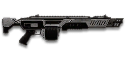

← Back to the NSX Naginata comparison
Sage Guide · Nanite Systems · Heavy Assault · All factions
The Nanite Systems light machine gun whose cone of fire stops growing: plant your feet, hold the trigger, and the 20th shot lands as true as the 8th. It asks for patience and positioning — and pays you back with the steadiest sustained fire in the game.
Read this first — this gun is NOT a starter. The NSX Naginata costs 1,000 certs (or 799 Daybreak Cash) and no faction is handed it for free. If you play a Nanite Systems Operative, your free starter LMG is the XMG-100. Reskins — the NSX-P, Ivory and Networked Naginatas — are stat-identical, so this guide covers them all.
The one-line verdict: the only LMG with a standing-still accuracy cap — 0.6° aimed (0.4° crouched), no matter how long you hold the trigger. Its 150-damage bullets kill in 7 chest shots up close and 4 headshots at any range, on a 90-round magazine. The price is honest: a slow 490 m/s muzzle velocity, a 0.15° starting aimed cone that's worse than the 0.10° standard, and a cap that only works while your feet are planted. Fight from cover at 8–65 metres, stop to shoot, and it will carry you.

The NSX Naginata · Nanite Systems · 90-round magazine · 1,000 certs
Every section below folds shut — tap a heading to open it. Section 01 starts open, because it's the lesson that saves you the most deaths.
Picture the scene, because you've probably lived it: you're sprinting across a courtyard, an enemy appears, and you do everything at once — hold the trigger down while you're still running, then press aim-down-sights (ADS) a split-second later, finger still down. The sight picture snaps in, it looks precise… and your bullets spray everywhere except the man in your crosshair. He kills you. It feels like the game cheated. It didn't — here's what actually happened.
You started firing from a sprint, from the hip. Sprinting is the least accurate state in the game: your cone of fire starts at 7.0° — fully bloomed, the widest it can ever be. Every shot you fire from the hip widens it further still (+0.12° per shot — the fastest hip bloom of any LMG here).
Then you pressed ADS mid-hold — and nothing reset. Aiming down sights does not shrink a cone of fire that is already bloomed. The scope only gives you a precise picture; the bullets keep flying out of the wide cone you built while running and hipfiring. That's the whole mystery: accurate-looking aim, wildly inaccurate gun.
Two timers stack the deck further: your gun needs about 0.3 s to settle after a sprint, and raising the sight itself takes ~0.15 s. Trigger held through all of it means your first half-second of fire is pure confetti.
1 · Feet. Let go of sprint (and the trigger, if you're already holding it). Stop, or drop into a strafe — anything but a full sprint.
2 · Sight. Press ADS and let the sight come up. This takes a heartbeat — that's fine, your overshield (F) covers it.
3 · Trigger. Now fire. Starting from the aimed cone of 0.15°, your first shots land where the dot points, and you control the bloom from zero instead of inheriting a maxed-out cone.
Stop → aim → fire. If you take one habit from this entire page, take this one. On this gun there's a bonus waiting at the end of it: keep your feet planted and the cone stops growing entirely after about eight shots — section 04 shows you why.
Four beats, left to right — the same mistake the cards above describe, drawn out.
1 · SprintingYour cone starts maxed at 7.0° — the widest it can ever be.
2 · Trigger heldFiring from the hip while running — every shot adds bloom.
3 · ADS, mid-holdThe sight looks precise — but aiming down sights does not reset bloom.
4 · The sprayBullets fly out of the wide cone you built. The enemy walks away.
Same fight, done right. Each beat has a job, and the order is the whole lesson.
1 · StopLet go of sprint (and the trigger). About 0.3 s for the gun to settle.
2 · AimPress ADS and let the sight come up (~0.15 s).
3 · FireNow fire — from the aimed cone. First shots land where the dot points.
The exception — under ~8 m, skip the whole danceHipfire works, no ADS needed, and stopping is optional. Keep moving, strafe, and let the hipfire ring do the work.
Every enemy infantry has 1,000 health (500 shield + 500 health). Your bullet does 150 damage up close, fading to 125 at long range. Headshots count double, leg shots count less (×0.9). Two damage tiers to memorise — no middle step — and one number that matters more than the rest: four headshots kill at any range.
| Range | Damage | Head | Chest | Legs | Chest vs shielded Heavy |
|---|---|---|---|---|---|
| Close · 0–10 m | 150 | 4 | 7 | 8 | 10 |
| Mid · 10–65 m | 150→125 | 4 | 7→8 | 8→9 | 10→12 |
| Far · 65 m+ | 125 | 4 | 8 | 9 | 12 |
Perfect-accuracy times to kill: 4 headshots ≈ 0.27 s at any range, 7 chest shots ≈ 0.55 s up close and 8 chest shots ≈ 0.64 s past ~26 m. The chest kill takes its extra bullet at ~26 m (damage falls below ~143); legs at ~34 m; a shielded Heavy needs his 11th chest shot past ~21 m and his 12th past ~50 m. In real fights you'll land maybe half your rounds — still, this is why the head matters so much on this gun: four head hits end it at any distance. Against infiltrators (900 health): 3 headshots up close, 4 past 10 m; 6 chest shots up close, 7 to ~57 m, 8 beyond.
Full power to 10 m, then a steady slide to minimum at 65 m. The gold line shows Soft Point Ammunition, which stretches full power to 15 m; the green line shows High Velocity Ammunition, which holds minimum damage out to 85 m.
One gun, four fighting styles. The right technique changes with distance — use the range finder below to see what your bullets do at any range, then learn the four bands underneath it. And one thing to carry through all four bands: this gun's accuracy is decided by whether your feet are moving, not just by range — section 04 is where that pays off.
How to fight hereAim down sights at the upper chest and neck. Stand still or stutter-step — your cone caps at 0.6° while your feet are planted, so you can hold the trigger far longer than on any other LMG.
Aim: centre of the chest, from the hip. Keep moving.
Scoping in costs you time and slows you down — at arm's length that gets you killed. But be honest with yourself about this gun's hipfire: it's the widest of the LMGs here (3.0° standing, 4.5° moving — a 0.42 m ring at 8 m standing, 0.63 m moving). It works point-blank because the target fills the ring, not because the gun is good at it. Strafe side to side (A/D) while firing so you're hard to track, and let the overshield soak the return fire.
Aim: neck / upper chest. Stand still, or stutter-step between holds.
This is where the gun earns its keep: full 150 damage to 10 m, a 7-shot chest kill to ~26 m, and the standing-still cap (section 04) means your cone stops growing at 0.6° after about eight shots — you can hold the trigger while other LMGs have to burst. Start your crosshair at the neck — the near-vertical climb walks shots two and three into the head, and 4 head hits end the fight in about a quarter of a second.
Aim: chest. Bursts of 4 rounds, pause between them — or plant your feet and let the cap work.
Damage is sliding toward 125 and your chest kill takes 8 shots past ~26 m. While you're strafing, fire 4 rounds (your still-to-moving window), release for a split second to let accuracy reset, fire again. Or stop moving entirely: the moment your feet plant, the cone drops back to the 0.6° cap and you can hold. Crouch when you can — the cap tightens to 0.4° and your starting cone stays 0.15°. The recoil climbs almost straight up, so pull your mouse gently down.
Aim: chest. Taps of 3–5 rounds at exposed targets only.
At 125 damage you need 8 chest shots, 12 against a shielded Heavy, with a slow 490 m/s bullet that needs real lead on anything moving. Take these shots at stationary or fleeing targets, medics reviving, and engineers on turrets. Otherwise, your better play is to close the distance behind cover. Knowing when not to shoot is a skill too.
Your accuracy is decided by two things before skill even enters it: what your body is doing (your stance sets the starting cone of fire) and what your finger is doing (holding the trigger grows that cone with every shot). The Naginata has no fire-mode switch — full-auto only — so "firing modes" are something you do with your finger, not a setting on the gun. And this gun adds a third thing no other LMG has: a hard cap on how wide the cone can get while you stand still.
| Stance | Starting cone | What it means for you |
|---|---|---|
| Sprinting | 7.0° | Maxed out — the widest the cone can be. This is the section 01 disaster: never start firing from a sprint. |
| Hipfire, moving | 4.5° | Walking or strafing from the hip. A 0.63 m ring at 8 m — wider than the torso, so edge rounds leak past him. |
| Hipfire, standing | 3.0° | Your point-blank default — and the widest standing hipfire of the LMGs here. The 0.42 m ring at 8 m in section 05 is this stance drawn out. |
| Hipfire, crouched | 2.25° | The tightest hipfire you have (4.0° if you crouch-walk). Crouch when holding a doorway from the hip. |
| Aimed (ADS), feet planted | 0.15° | Standing or crouched makes no difference to the start — but it changes the cap: 0.6° standing, 0.4° crouched. This is why section 01's order matters. |
| Aimed (ADS), strafing | 0.4° + bloom | A wider start than planted — and no cap while you move: the cone keeps growing to 3.0°. This is the whole gun in one row: move and you bloom like everyone else; stop and the cap catches you. |
| Aimed (ADS), crouch-walk | 0.35° + bloom | Nearly as wide as strafing, same 3.0° max. Don't crouch-walk and shoot. |
| Stance | Shots still, then move | How it works |
|---|---|---|
| ADS, standing | 4 | (0.4 − 0.15) ÷ 0.06 = 4.17 → 4 shots, then move: the cone has reached the 0.4° moving floor, so switching costs nothing. |
| ADS, crouched | 3 | (0.35 − 0.15) ÷ 0.06 = 3.33 → 3 shots, then move. |
| Hipfire, standing | 12 | (4.5 − 3.0) ÷ 0.12 = 12.5 → 12 shots, then move. |
| Hipfire, crouched | 14 | (4.0 − 2.25) ÷ 0.12 = 14.58 → 14 shots, then move. |
The rhythm is a training baseline, tested in VR — real fights are adaptation. Fire the window's shots standing still, then move; the cone has already reached the moving minimum, so the switch costs nothing.
| Range | Ideal ADAD miss | Moving miss | Damage lost by moving |
|---|---|---|---|
| 35 m | 0.0% | 3.8% | 3.8% |
| 60 m | 14.6% | 41.7% | 31.8% |
Measured on a 10-round aimed burst at a 0.5 m torso, counting each shot's cone before its bloom. Ideal-vs-still at 60 m costs just 1.0% of your damage — the rhythm buys you almost all of the standing-still accuracy while you keep moving. But note the other direction: spraying on the move at 60 m wastes nearly a third of your damage. Standing still is the biggest TTK lever on this gun, and it only grows past 35 m.
| Mode | How your finger does it | Use it at |
|---|---|---|
| The hold (standing still) | Hold the trigger and don't let go — the cap keeps the cone at 0.6° | Feet planted or crouched, 8–65 m. This gun's signature: the 20th shot is as accurate as the 8th. |
| Bursts — the default while moving | Hold for 4 rounds, release ~0.12 s, hold again. 5–8 rounds is fine while you're learning | Almost everything while strafing, 8–65 m. Each release resets the cone, so every burst starts at 0.15°. |
| The mag dump | Hold the trigger and don't let go, from the hip | Point blank only, or suppressing a doorway. Hip bloom (0.12° per shot) maxes the cone fast — past ~12 rounds you're spraying, not aiming. |
| Tap-fire | Short taps of 3–5, or single clicks, with a real pause between | 65 m and out, at exposed or stationary targets. Slow, but every round goes where the dot is. |
A target 30 m away, aiming down sights, feet planted. Press and hold FIRE (mouse, touch, or hold Space with the button focused) and watch the holes walk wider the longer you hold — then stop walking wider. That's the cap: after about eight shots the cone can't grow any further, so your later shots group just as tightly as your middle ones. Release, let the cone reset, fire again. This practice window is shared by the whole Sage series: it's driven by a weapon profile plugged into the window — here the Naginata's (659 RPM, 0.15° starting cone, 0.06° bloom per shot, target at 30 m, capped at 0.6°) — and the spread is drawn at true scale from those numbers.
Cone of fire — fills as you hold, stops at the 0.6° cap.
Your holds will be graded here — hold while standing still and watch the cone stop growing at the 0.6° cap.
Some things are easier to show than to say. Here's what your bullets actually do: how wide hipfire spreads at 8 metres, what the standing-still cap looks like across a long hold, and what the 2x sight really changes. The hands-on version — holding the trigger yourself — is the practice window in section 04.
A full-size target 8 m away — an arm's-length room fight. The rings show where hipfire rounds land around your aim point (the chest). Sizes are drawn to scale from the gun's real cone-of-fire numbers.
Read it this way: standing still, the 0.42 m ring sits inside the chest — most rounds hit a target this size, which is why hipfire works point-blank — but it's the widest standing ring of the LMGs here, and moving it grows to 0.63 m, wider than the torso, so the edge rounds start leaking past him. Crouched it's 0.31 m; a Laser Sight tightens the standing ring to 0.28 m, but the hip bloom (0.12° per shot) blows it back open within a few rounds. Past ~10 m that's rounds missing entirely: the exact moment to switch to aiming down sights, where the spread shrinks to a dot. (Ring sizes use the real geometry: spread diameter = 2 × distance × tan(cone ÷ 2).)
Same trigger hold, two different feet. Standing still, the cone climbs from 0.15° and stops dead at the 0.6° cap. Strafing, it starts wider and never stops climbing.
The whole gun in one picture. Feet planted, your cone climbs from 0.15° and stops dead at 0.6° — the 20th shot of a hold is as accurate as the 8th, which is why this gun can spray at mid-range while other LMGs must burst. Strafe while firing and there is no cap until 3.0°: after 15 shots your cone is already past 1.3° and still climbing. The lesson isn't "never move" — it's "stop to shoot": hold while still, strafe while the cone resets, hold again.
No zoom. The target at 35 m is small but the view is wide open — you see the crate, the tower, and the next enemy coming. Fast to aim, nothing blocks your edges. Best inside ~40 m.
Same target, same 35 m — but he looks twice as tall, so placing shots on his chest and head gets much easier. The price: your view narrows to the round window, the crate and tower are gone, and close targets feel fast and huge. Best at 25–50 m.
That's the whole 30-cert decision from section 06 in one picture: 1x for awareness, 2x for precision. Most veterans carry both and swap per base — indoors 1x, open ground 2x.
Two things to know before you spend a single cert. First, this gun comes bare — iron sights, no rail attachment, no barrel attachment. Nothing is free here except the gun you already paid 1,000 certs for. Second, two things don't exist for this gun at all: no suppressor, and no Angled Forward Grip. Don't go looking for them — and don't let anyone sell you a build that needs one.
The plain NS iron sights the gun ships with. Usable, but the posts are chunky and they crowd the target at range.
Good: your first fights while you save 30 certs — it costs nothing and works.
Bad: anything past 30 m, where the posts hide the chest you're aiming at.
A clean illuminated red-dot sight with no zoom. Your default once you can afford it, and honestly your best all-round option.
Good: everywhere indoors and out to ~40 m — which is most PlanetSide fights.
Bad: picking out targets past 50 m; that's what the 2x is for.
Doubles your view magnification. Costs almost nothing — the price of one kill or two.
Good: open-field bases, tower fights, and your 25–50 m burst game. Swap between 1x and 2x per fight.
Bad: tight indoor rooms — the zoom makes close targets feel fast and huge.
Night-vision sight: enemies glow white against a dark view, and it sees through smoke.
Good: night fights, smoky doorways, spotting infiltrators by their outline.
Bad: daytime and long range — its view is short-ranged and washes out in bright light.
LANS / NiSGO (3.4x) and Quadra / Tetra (4x) — sniper-style magnification on an automatic LMG.
Good: almost nothing a beginner does — recoil magnifies too, and tunnels your vision.
Bad: any fight inside 30 m, which is where you'll spend your first hundred hours.
The Naginata's recoil is the thing to fight, not its cone — the cap already handles the cone. Plenty of veterans run this slot empty until the Compensator.
Good: your first weeks. Spend certs on your suit and shield first.
Bad: nothing — there's no downside to an empty slot.
Cuts vertical recoil by 30% — and vertical recoil is the main thing to fight on this gun. Costs you: hipfire spread grows 15%, and enemies see you on the minimap from 35 m farther away when you fire.
Good: if you mostly aim down sights at mid-range and the upward climb bothers you. The most useful barrel on this gun.
Bad: hipfire builds and sneaky play — you get louder on the map and sloppier from the hip.
Your shots bloom 20% slower while aiming (0.06° → 0.048° per shot), so the still-to-moving window stretches from 4 shots to 5. But you move 20% slower while scoped (0.5× → 0.4×), which hurts your stutter-step.
Good: holding a lane or doorway at 25–50 m, firing from a steady position.
Bad: aggressive room-clearing — the slower scoped strafe makes you an easier target between holds.
Hipfire bloom grows 40% slower (0.12° → 0.072° per shot) — much steadier hip spraying. But vertical recoil rises 20% when you do aim.
Good: a dedicated close-quarters build paired with the Laser Sight.
Bad: general play — it taxes the aimed shooting you'll do most.
Hides your muzzle flash so your own view stays clear at night — but you appear on enemy minimaps from 15 m farther away.
Good: night fights where your own flash blinds you. A comfort pick, nothing more.
Bad: as an early purchase — it changes no fight outcome. Buy it last, if ever.
Cuts side-to-side recoil by 25% (0.16° → 0.12°), keeping your bursts on a single target. Tiny cost: weapon swap is 0.15 s slower.
Good: the default rail — once vertical recoil is compensated and the cone is capped, the sideways walk is the only thing left limiting accuracy.
Bad: nothing meaningful. It only stops helping if you never aim down sights.
Hipfire accuracy improves by a third (33% tighter cone). Replaces the Forward Grip — you can't have both.
Good: a dedicated point-hold build that hipfires down stairwells inside 8 m.
Bad: as your everyday rail — the hip bloom (0.12° per shot) re-opens the tightened cone within a few rounds, and this gun's hipfire is poor to start with. Not viable as a main build.
A torch whose beam reveals cloaked infiltrators. Toggle it with the attachment key (X by default).
Good: hunting a stalker infiltrator camping your capture point — sweep corners with it.
Bad: as your everyday rail — it gives zero accuracy help, and the beam advertises your position.
Full 150 damage now reaches to 15 m instead of 10 m (the gold line on the chart above), stretching your 7-shot chest kill to ~29 m. Cost: bullets fly 10% slower (490 → 441 m/s).
Good: close-range play — most duels happen at 10–20 m, exactly where this extends your best damage band.
Bad: long-range duels against runners, where the slower bullet needs more lead. A small price.
Bullets fly 10% faster (490 → 539 m/s) and minimum damage now holds out to 85 m instead of 65 m — but full damage ends 2 m sooner (10 m → 8 m). The 7-shot chest kill stretches to ~30 m.
Good: the slightly better of the two ammo options overall — about +5% damage in the 30–85 m band where this gun lives, and faster bullets mean less lead on moving targets.
Bad: close work — you shave 2 m off your best damage band for speed you don't need indoors.
Magazine grows 50%: 90 → 135 rounds. Costs you 15% slower equip and unequip.
Good: long holds on a point, where 90 rounds of sustained capped fire still runs dry.
Bad: as an early purchase — only +45 rounds on a gun with a fast 3.2 s reload. Low value; buy it last.
Costs below are attachments only — the gun itself is 1,000 certs on top of all of them, so even the "0 certs" build assumes you've already bought it.
0 certs attachments · Just bought the gun
What the 1,000 certs actually buy you. Genuinely usable — the cap works with no attachments at all. Learn the gun on this before spending anything more.
230 certs attachments · Recommended
The best value in this whole guide. Covers every fight from a doorway to a tower courtyard.
330 certs attachments · Indoor brawler
Built to hold a capture point room: capped cone, tamed climb, 90 rounds of sustained fire. Swap back to the All-Rounder outdoors.
330 certs attachments · Open ground
For tower courtyards and open lanes at 35–65 m: 2x magnification, faster bullets, minimum damage held to 85 m. Plant your feet and let the cap do the work.
Your overshield (F key) is extra health that only helps if it's on before the bullets arrive — and Resist Shield pairs with this gun's defensive style better than any other. Hear footsteps or expect a corner? Shield up, then peek. A shielded Heavy needs 10 chest shots to drop up close instead of 7 — that gap wins duels.
The cap is the gun: standing still aiming down sights, your cone stops at 0.6° after about eight shots and never grows again. In the open, stutter-step instead: hold while still, strafe while the cone resets, hold again. The player who stops moving first wins the accuracy fight — make it you.
Headshots deal double damage: 4 kills at any range versus 7–8 to the chest. Don't aim at the head directly — aim at the neck and let the gun's near-vertical climb carry shots two and three into the skull. It's the single biggest damage upgrade you own, and it's free.
Under 35 m, ride the cap or crouch-reset while spraying — the cone is capped and the target is close. Past 35 m, burst in 4s and release between them. Standing still is the biggest TTK lever on this gun, and the lever only gets longer with range: at 60 m, spraying on the move wastes nearly a third of your damage.
Reloading with even 1 bullet left takes 3.2 s; an empty gun takes 4.4 s — an extra 1.2 s standing defenceless, the price of the long chamber. Count roughly: after two kills or ~60 rounds, duck behind cover and reload early. Treat the last 20 rounds as your emergency reserve, not your working magazine.
Your damage, accuracy and shield all shine when the enemy comes to you: behind cover, a doorway or a lane, a small arc to watch, feet planted. Sprint between cover, use buildings and rocks as stepping stones, and arrive at your range before opening fire. The player who chooses the range usually wins the duel — make it you.
Every gun has a price. Here's where the Naginata pays — and the habit that covers each hole.
150 damage at 659 RPM is 1,647 damage per second at best, falling to 1,373 at long range. The VS Orion and TR CARV both fire 750 RPM at the same 143 damage — about 1,788 per second. If you and an enemy Heavy trade chest shots face-to-face, their bullets add up faster than yours.
Play around it: don't trade fairly. Shield first, aim for the neck, and use your still-accuracy — you're landing shots while standing your ground, and that steadiness breaks their aim more than their fire rate breaks you.
Your bullets are slow for an LMG: leading a moving target past 50 m is guesswork, and the 125-damage floor at 65 m arrives with real travel time. Snipers and battle rifles own that ground.
Play around it: High Velocity Ammunition (539 m/s) helps but doesn't fix it. Hold fire until they stop, or close the distance — and take your long shots at stationary targets only.
0.15° standing still, where the standard LMG starts at 0.10°. Your very first aimed shot is already wider than other LMGs' — the gun hands you a worse opening and asks you to earn it back.
Play around it: the cap is the compensation. After 8 shots you're at 0.6° and going no wider, while other guns keep blooming past 1°. Win the long hold, not the first shot.
0.4–0.6° of climb per shot, and the first shot kicks 1.8× as hard (0.72–1.08°). In a long hold your aim walks straight up off the target's head — you'll see this clearly in the VR drill below.
Play around it: pull your mouse straight down while firing — the angle is near-vertical (±1.5°), so there's almost no sideways correction to learn. The Compensator already trims the climb by 30%, and the Forward Grip trims the small sideways walk by 25%.
Strafe while firing and there is no cap until 3.0° — the cone just keeps growing, like any other LMG. The gun punishes the run-and-gun Heavy who never stops moving.
Play around it: stutter-step — stop to shoot, move to reposition, never fire on the move past 35 m. The 4-shot still-to-moving window (section 04) is the rhythm that keeps you both accurate and alive.
A thousand certs buys a lot of overshield ranks, suit slots and abilities. This gun does not out-damage the free starters; it out-handles them. If you buy it expecting a bigger hammer, you'll feel robbed.
Play around it: buy it for the handling — the cap, the 90-round magazine, the gentle horizontal recoil — and only after your shield and suit are in decent shape. And remember the swap time: 0.65 s to bring it out, so change weapons behind cover, never in the open.
Open the world map, travel to VR Training, and run these on the target dummies. Five minutes before a play session beats an hour of dying confused.
Aim at a wall 20 m away and empty a full magazine without touching the mouse. Watch the bullet pattern climb almost straight up — that's your gun's fingerprint. Repeat, this time pulling straight down, until the group stays fist-sized.
At 30 m, plant your feet and hold a full 20-round burst into a dummy. Count the hits in the second half of the burst versus the first — they should be nearly equal. Then repeat the same burst while strafing, and watch the accuracy collapse. This drill teaches the cap by feel.
At 30 m, kill dummies with 4 shots standing still, strafe, 4 shots standing still — the ideal ADAD rhythm from section 04. If a burst goes wide, shorten it. Goal: whole kills without a single wild round.
Hold a doorway crouched and hold the trigger into a dummy — feel the tighter 0.4° cap. Stand up mid-burst and feel the cone jump to the 0.6° cap. Learn which cap you're fighting under before you need it in a real doorway.
Fire exactly 60 rounds, step behind a pillar, reload, repeat. Train your hands to reload early and only in cover until it's automatic — in real fights you'll do it without thinking, which is the point. Remember: the empty reload is 4.4 s, a full 1.2 s slower than reloading with rounds left.